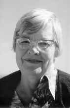

Please note: the AAS Obituaries are temporarily being hosted on this website while their full content is being ingested into the PubPub publishing platform newly adopted by the Bulletin of the American Astronomical Society. When the migration is complete, your existing links will take you to the final, migrated content. Contact peter.williams@aas.org with any questions.
Julena Steinheider Duncombe (1911-2003)
Julena Steinheider Duncombe died on 13 September 2003, just eight days before her 92nd birthday.
Julena Steinheider was born September 21, 1911 on a farm in Dorchester, Nebraska and grew up in Goehner, Nebraska. Her parents were Frederick and Ella Beenders Steinheider, and she had four brothers. She began college at the age of 17 and graduated at 21 from Doane College in Crete, Nebraska with a major in mathematics and a minor in astronomy. She started teaching in a one-room schoolhouse, where, with assistance from her family, she started possibly the first school lunch program by fixing lunches on the schoolhouse stove to provide food for children who only had popcorn to eat. Then she taught in Minatare and Scotts Bluff, Nebraska, and in a Japanese Relocation Camp in Wyoming.
In 1945 she moved to Washington DC to begin working at the US Naval Observatory (USNO). She was the first woman observer on the 6-inch transit circle. She worked as an observer and mathematician reducing and analyzing observations of the Sun, Moon, planets, and stars. At the Naval Observatory she met Raynor Duncombe and married him in Goehner, Nebraska, in January 1948. She resigned from the USNO in 1948 to go with her husband to Yale University. At Yale the Duncombes introduced punched card equipment into the Astronomy Department. Ray also took graduate classes and Julie worked on Astrographic Catalog reductions.
Upon returning to USNO in 1950 she joined the Nautical Almanac Office. She supervised the punched card operated typewriter to produce tables of positions of celestial bodies for air and sea navigation. With Dorrit Hoffleit she directed the keypunching of over 150 star catalogs, approximating 1.5 million cards. Several thousand errata to the catalogs were discovered and corrected on the cards and tape versions of the catalogs. This activity was the basis for future stellar databases. From 1963 she was responsible for producing the tabular predictions and maps for solar and lunar eclipses, which appeared in the almanacs and special circulars. After 28 years at the U S Naval Observatory she retired in 1973.
In 1975 the Duncombes moved to Austin, Texas. There she supported Ray, who was executive editor of Celestial Mechanics, serving as associate editor of the journal. Throughout their lives in Washington and Austin the Duncombes were gracious hosts for overnight guests and for dinner parties. Julie was very experienced at giving both small and large dinner parties for foreign visitors, USNO staff, graduate students and others. They also hosted people at their mountain house in Highlands, NC.
Julie Duncombe was a fellow of the American Association for the Advancement of Science, a member of the American Astronomical Society, Division on Dynamical Astronomy, American Association of University Women, and the Institute of Navigation. She was a proponent for women having careers in mathematics and science. In 1959 the Department of Labor featured her career at the USNO as an example of what women in Federal Service could accomplish.
In her later years she suffered from macular degeneration and Alzheimer's disease. She is survived by her husband of 55 years, Raynor Lockwood Duncombe; stepson Raynor Bailey Duncombe and wife Janice of Middleburg, NY; grandchildren Raynor Luccioni Duncombe and wife Heidi of Charlotte, NC and Christina Luccioni Duncombe of Williamsburg, VA.
Obituary written by: P. Kenneth Seidelmann (University of Virginia)
BAAS Citation: BAAS, 2004, 36, 1669
SAO/NASA ADS Bibcode: 2004BAAS...36.1670S